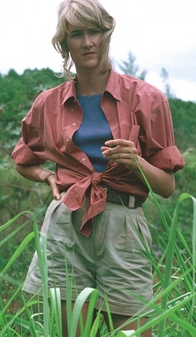
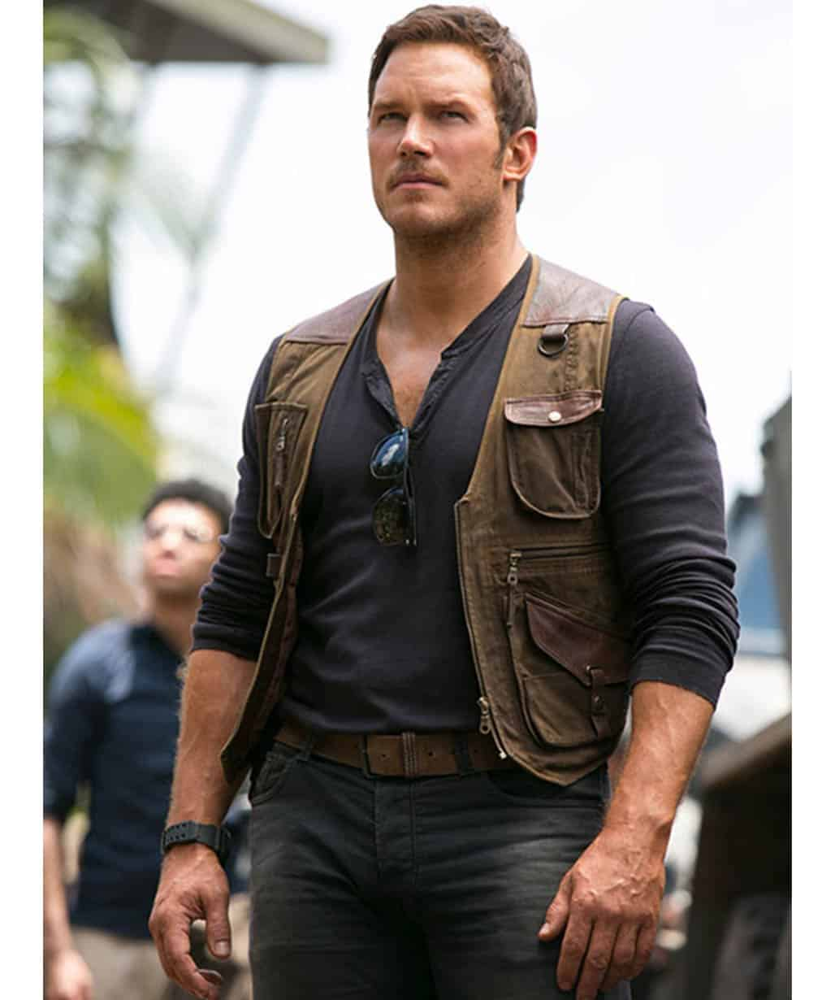

Jurassic World: The Fan Page
| HOME | MOVIES | CHARACTERS | DINOSAURS | GALLERY | VIDEOS |
 |
 |  |
| Dr. Alan Grant: An expert paleontologist and passionate about dinosaurs. He is skeptical about the dangers of cloning them, but becomes the main hero in their fight for survival. | Dr. Ellie Sattler: Paleobotanist and colleague of Alan Grant. She is brave, intelligent and a key player in the fight against the dinosaurs. | John Hammond: The billionaire who founded Jurassic Park. He means well, but underestimates the risks of reviving the dinosaurs. |
 |
 |  |
Dr. Ian Malcolm: Mathematician and chaos theorist, he suggests that dinosaur cloning is an inevitable catastrophe. With his wit and sarcasm, he brings a critical view of Hammond's experiments. | Owen Grady: Former military officer and raptor trainer. He is a born leader and forms a special bond with the dinosaurs, especially Blue, the leader of the raptors. | Claire Dearing: Manager of Jurassic World Park. Initially focused on business, she later proves to be brave and determined to protect both humans and dinosaurs. |